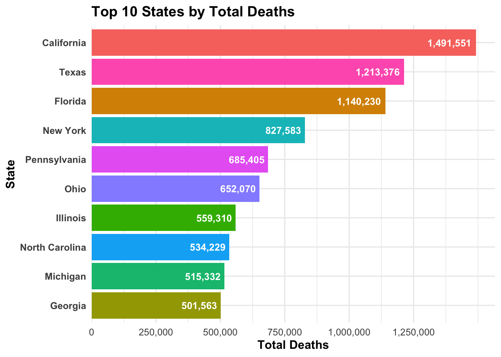
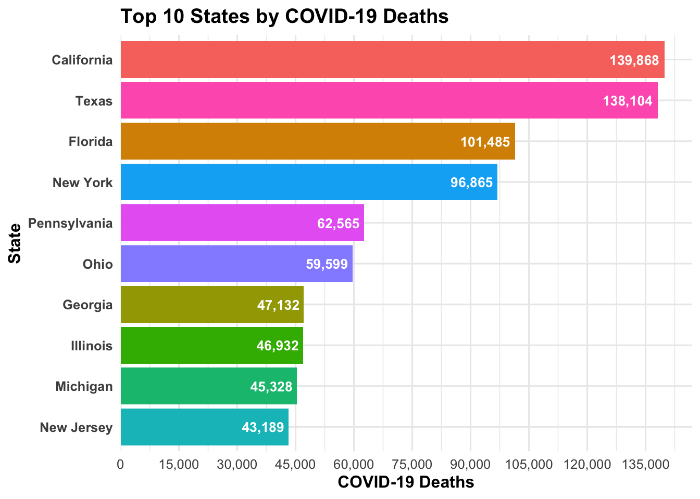
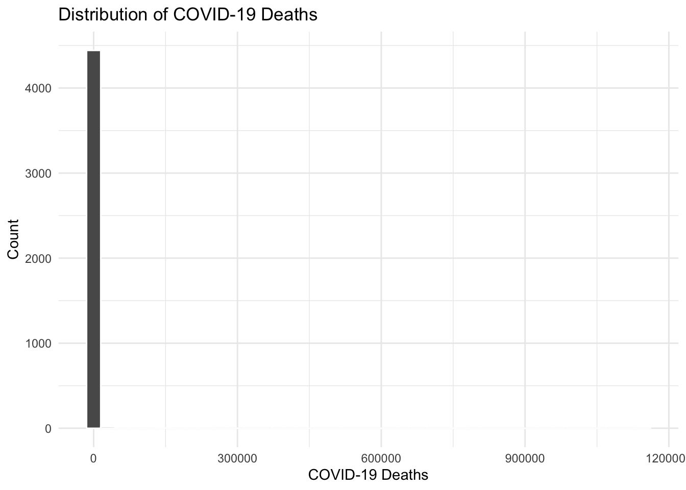
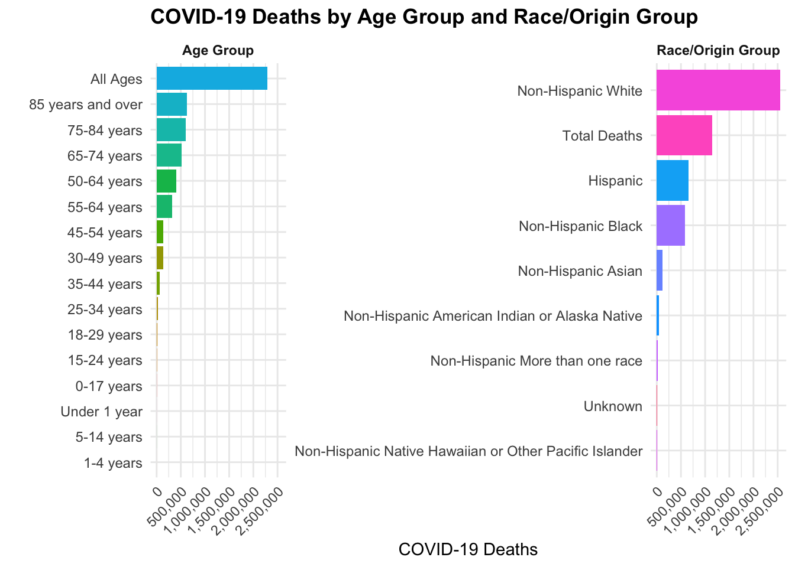

This data analysis was done using the Provisional COVID-19 Deaths by Race and Hispanic Origin, and Age dataset provided by the NCHS/DVS, which contains data on deaths involving COVID-19, pneumonia, and influenza, categorized by race/age/jurisdiction.
There are 13 columns listed:
Date as of - date of analysis
Start date - first date of data period
End date - last date of data period
State - jurisdiction of occurrence
Age group - age group
Race and Hispanic Origin Group - Race or Hispanic origin group
Pneumonia, Influenza, or COVID-19 deaths - deaths with any of aforementioned codes.
Footnote- suppressed counts (1-9)
Package loading and install
First we need to upload and/or install packages for cleaning our data
# install packages if not already installed (run once in the console)# load required packages# tidyverse added for later steps with data processinglibrary("dslabs")
Warning: package 'dslabs' was built under R version 4.5.2
library("tidyverse")
Warning: package 'ggplot2' was built under R version 4.5.2
Warning: package 'tibble' was built under R version 4.5.2
Warning: package 'tidyr' was built under R version 4.5.2
Warning: package 'readr' was built under R version 4.5.2
Warning: package 'purrr' was built under R version 4.5.2
── Attaching core tidyverse packages ──────────────────────── tidyverse 2.0.0 ──
✔ dplyr 1.1.4 ✔ readr 2.1.6
✔ forcats 1.0.1 ✔ stringr 1.6.0
✔ ggplot2 4.0.1 ✔ tibble 3.3.1
✔ lubridate 1.9.4 ✔ tidyr 1.3.2
✔ purrr 1.2.1
── Conflicts ────────────────────────────────────────── tidyverse_conflicts() ──
✖ dplyr::filter() masks stats::filter()
✖ dplyr::lag() masks stats::lag()
ℹ Use the conflicted package (<http://conflicted.r-lib.org/>) to force all conflicts to become errors
library("readr")library("stringr")library("here")
here() starts at /Users/nalanyrichardson/Downloads/MADA/Portfolio
library("janitor")
Attaching package: 'janitor'
The following objects are masked from 'package:stats':
chisq.test, fisher.test
# read in the datacdcdata <-read_csv(here("cdcdata-exercise", "Provisional_COVID-19_Deaths_by_Race_and_Hispanic_Origin,_and_Age_20260211.csv"))
Rows: 6489 Columns: 13
── Column specification ────────────────────────────────────────────────────────
Delimiter: ","
chr (7): Data as of, Start Date, End Date, State, Age group, Race and Hispan...
num (6): COVID-19 Deaths, Total Deaths, Pneumonia Deaths, Pneumonia and COVI...
ℹ Use `spec()` to retrieve the full column specification for this data.
ℹ Specify the column types or set `show_col_types = FALSE` to quiet this message.
Show dataset structure
Now we should take a look at what the data actually looks like.
# get an overview of data structure# I prefer str() for checking out the data, but I also like glimpse() for very rote summaries where you can determine characteristics.We can run all of them and see what we get, and then just choose whatever we'd like.str(cdcdata)
spc_tbl_ [6,489 × 13] (S3: spec_tbl_df/tbl_df/tbl/data.frame)
$ Data as of : chr [1:6489] "09/27/2023" "09/27/2023" "09/27/2023" "09/27/2023" ...
$ Start Date : chr [1:6489] "01/01/2020" "01/01/2020" "01/01/2020" "01/01/2020" ...
$ End Date : chr [1:6489] "09/23/2023" "09/23/2023" "09/23/2023" "09/23/2023" ...
$ State : chr [1:6489] "United States" "United States" "United States" "United States" ...
$ Age group : chr [1:6489] "All Ages" "All Ages" "Under 1 year" "0-17 years" ...
$ Race and Hispanic Origin Group : chr [1:6489] "Total Deaths" "Non-Hispanic White" "Non-Hispanic White" "Non-Hispanic White" ...
$ COVID-19 Deaths : num [1:6489] 1146687 759258 190 642 113 ...
$ Total Deaths : num [1:6489] 12303828 9104563 28980 54364 6164 ...
$ Pneumonia Deaths : num [1:6489] 1162833 805461 409 1218 278 ...
$ Pneumonia and COVID-19 Deaths : num [1:6489] 569243 362196 34 163 28 ...
$ Influenza Deaths : num [1:6489] 22226 16132 24 248 84 ...
$ Pneumonia, Influenza, or COVID-19 Deaths: num [1:6489] 1760015 1217336 588 1931 443 ...
$ Footnote : chr [1:6489] NA NA NA NA ...
- attr(*, "spec")=
.. cols(
.. `Data as of` = col_character(),
.. `Start Date` = col_character(),
.. `End Date` = col_character(),
.. State = col_character(),
.. `Age group` = col_character(),
.. `Race and Hispanic Origin Group` = col_character(),
.. `COVID-19 Deaths` = col_number(),
.. `Total Deaths` = col_number(),
.. `Pneumonia Deaths` = col_number(),
.. `Pneumonia and COVID-19 Deaths` = col_number(),
.. `Influenza Deaths` = col_number(),
.. `Pneumonia, Influenza, or COVID-19 Deaths` = col_number(),
.. Footnote = col_character()
.. )
- attr(*, "problems")=<externalptr>
library(dplyr)library(readr)# clean datacdc_clean <- cdcdata %>%# remove columns not needed for our analysisselect(-`Data as of`, -`Start Date`, -Footnote) %>%# rename columns-- I do this as the original dataset would require backticks for uppercase and spaced column names.rename(end_date =`End Date`,state = State,age_group =`Age group`,race_origin =`Race and Hispanic Origin Group`,covid_deaths =`COVID-19 Deaths`,total_deaths =`Total Deaths`,pneumonia_deaths =`Pneumonia Deaths`,pneumonia_covid_deaths =`Pneumonia and COVID-19 Deaths`,influenza_deaths =`Influenza Deaths`,pneumonia_influenza_covid_deaths =`Pneumonia, Influenza, or COVID-19 Deaths` ) %>%# standardize formats and clean spacing. `mdy()` converts the end_date column to a date format, while `str_squish()` and `str_trim()` remove extra spaces from the state. I noticed that some state values were returning as `NA` because of extra spaces. So look out for that!mutate(end_date =mdy(end_date),state =str_squish(str_trim(state)),age_group =str_squish(str_trim(age_group)),race_origin =str_squish(str_trim(race_origin)) )# also saw that NYC was separated from New York, so I combined those two together to avoid confusion and make sure all data from New York is in one place.cdc_clean <- cdc_clean %>%mutate(state =ifelse(state %in%c("New York", "New York City"), "New York", state))# now we can double check that names are correct and data is in the correct format.names(cdc_clean)
We can now start to analyze the data and make some plots. For example, we can look at the relationship between COVID-19 deaths and total deaths across different age groups or states.
We can also explore how pneumonia deaths relate to COVID-19 deaths, or how influenza deaths compare across different race and Hispanic origin groups.
library(dplyr)library(ggplot2)library(scales)
Attaching package: 'scales'
The following object is masked from 'package:purrr':
discard
The following object is masked from 'package:readr':
col_factor
state_totals <- cdc_clean %>%filter(state !="United States") %>%group_by(state) %>%summarise(total_deaths =sum(total_deaths, na.rm =TRUE), .groups ="drop")# this gives us the top 10 states by total deaths, which we can plot in a horizontal bar chart.top10 <- state_totals %>%arrange(desc(total_deaths)) %>%slice_head(n =10)# horizontal bar chart: states on y-axis, total_deaths on x-axis ggplot(top10, aes(x =reorder(state, total_deaths), y = total_deaths, fill = state)) +geom_col() +geom_text(aes(label =comma(total_deaths)),hjust =1.1, # move text slightly inside barcolor ="white",fontface ="bold",size =3.5 ) +coord_flip() +# flip coordinates for horizontal barsscale_fill_hue() +scale_y_continuous(breaks =seq(0, max(top10$total_deaths, na.rm =TRUE), by =250000),labels = comma,expand =expansion(mult =c(0, 0.05)) ) +labs(title ="Top 10 States by Total Deaths",x ="State",y ="Total Deaths" ) +theme_minimal(base_size =12) +theme(plot.title =element_text(face ="bold"),axis.title.x =element_text(face ="bold"),axis.title.y =element_text(face ="bold"),axis.text.y =element_text(face ="bold"),legend.position ="none" )

As seen above, California has the highest total deaths, followed by Texas and Florida. The top 10 states account for a significant portion of the total deaths in the dataset. Now we can look at the relationship between COVID-19 deaths and total deaths across different states and variables.
library(dplyr)library(ggplot2)library(scales)# top 10 states by covid deaths (excluding US aggregate; merged NYC into NY)covid_top10 <- cdc_clean %>%filter(state !="United States") %>%mutate(state =ifelse(state =="New York City", "New York", state)) %>%group_by(state) %>%summarise(covid_deaths =sum(covid_deaths, na.rm =TRUE), .groups ="drop") %>%arrange(desc(covid_deaths)) %>%slice_head(n =10)ggplot( covid_top10,aes(y =reorder(state, covid_deaths), x = covid_deaths, fill = state)) +geom_col() +geom_text(aes(label =comma(covid_deaths)),hjust =1.1,color ="white",fontface ="bold",size =3.5 ) +scale_fill_hue() +scale_x_continuous(breaks =seq(0, max(covid_top10$covid_deaths, na.rm =TRUE), by =15000),labels = comma,expand =expansion(mult =c(0, 0.05)) ) +labs(title ="Top 10 States by COVID-19 Deaths",x ="COVID-19 Deaths",y ="State" ) +theme_minimal(base_size =12) +theme(plot.title =element_text(face ="bold"),axis.title.x =element_text(face ="bold"),axis.title.y =element_text(face ="bold"),axis.text.y =element_text(face ="bold"),legend.position ="none" )

The Top 10 States by COVID-19 Deaths plot shows that California has the highest number of COVID-19 deaths, followed by Texas and Florida, similar trend to total deaths. It’s a good idea to perhaps explore how age groups and race/origin groups are affected, or effect these trends as well.
fit1 <-lm(covid_deaths ~ age_group, data = cdc_clean)summary(fit1)
Call:
lm(formula = covid_deaths ~ age_group, data = cdc_clean)
Residuals:
Min 1Q Median 3Q Max
-252496 -927 -50 -2 891868
Coefficients:
Estimate Std. Error t value Pr(>|t|)
(Intercept) 10.514 1116.915 0.009 0.992
age_group1-4 years -9.536 1525.399 -0.006 0.995
age_group15-24 years 8.644 1552.646 0.006 0.996
age_group18-29 years 39.053 1580.992 0.025 0.980
age_group25-34 years 74.695 1565.688 0.048 0.962
age_group30-49 years 436.043 1552.646 0.281 0.779
age_group35-44 years 198.280 1564.348 0.127 0.899
age_group45-54 years 479.970 1559.069 0.308 0.758
age_group5-14 years -8.309 1564.348 -0.005 0.996
age_group50-64 years 1268.674 1526.511 0.831 0.406
age_group55-64 years 1044.631 1543.968 0.677 0.499
age_group65-74 years 1577.223 1519.929 1.038 0.299
age_group75-84 years 1930.076 1535.636 1.257 0.209
age_group85 years and over 2094.041 1551.384 1.350 0.177
age_groupAll Ages 254808.819 6285.233 40.541 <2e-16 ***
age_groupUnder 1 year -8.139 1552.646 -0.005 0.996
---
Signif. codes: 0 '***' 0.001 '**' 0.01 '*' 0.05 '.' 0.1 ' ' 1
Residual standard error: 18560 on 4454 degrees of freedom
(2019 observations deleted due to missingness)
Multiple R-squared: 0.2754, Adjusted R-squared: 0.2729
F-statistic: 112.8 on 15 and 4454 DF, p-value: < 2.2e-16
fit2 <-lm(covid_deaths ~ race_origin, data = cdc_clean)summary(fit2)
Call:
lm(formula = covid_deaths ~ race_origin, data = cdc_clean)
Residuals:
Min 1Q Median 3Q Max
-4000 -975 -81 -19 755258
Coefficients:
Estimate
(Intercept) 1103.65
race_originNon-Hispanic American Indian or Alaska Native -1022.46
race_originNon-Hispanic Asian -881.48
race_originNon-Hispanic Black -91.54
race_originNon-Hispanic More than one race -1067.54
race_originNon-Hispanic Native Hawaiian or Other Pacific Islander -1087.36
race_originNon-Hispanic White 2896.78
race_originTotal Deaths 1145583.35
race_originUnknown -1084.88
Std. Error
(Intercept) 545.72
race_originNon-Hispanic American Indian or Alaska Native 782.23
race_originNon-Hispanic Asian 787.66
race_originNon-Hispanic Black 780.48
race_originNon-Hispanic More than one race 843.63
race_originNon-Hispanic Native Hawaiian or Other Pacific Islander 792.19
race_originNon-Hispanic White 759.89
race_originTotal Deaths 13367.47
race_originUnknown 782.94
t value
(Intercept) 2.022
race_originNon-Hispanic American Indian or Alaska Native -1.307
race_originNon-Hispanic Asian -1.119
race_originNon-Hispanic Black -0.117
race_originNon-Hispanic More than one race -1.265
race_originNon-Hispanic Native Hawaiian or Other Pacific Islander -1.373
race_originNon-Hispanic White 3.812
race_originTotal Deaths 85.699
race_originUnknown -1.386
Pr(>|t|)
(Intercept) 0.04320 *
race_originNon-Hispanic American Indian or Alaska Native 0.19125
race_originNon-Hispanic Asian 0.26315
race_originNon-Hispanic Black 0.90663
race_originNon-Hispanic More than one race 0.20579
race_originNon-Hispanic Native Hawaiian or Other Pacific Islander 0.16994
race_originNon-Hispanic White 0.00014 ***
race_originTotal Deaths < 2e-16 ***
race_originUnknown 0.16592
---
Signif. codes: 0 '***' 0.001 '**' 0.01 '*' 0.05 '.' 0.1 ' ' 1
Residual standard error: 13360 on 4461 degrees of freedom
(2019 observations deleted due to missingness)
Multiple R-squared: 0.624, Adjusted R-squared: 0.6233
F-statistic: 925.3 on 8 and 4461 DF, p-value: < 2.2e-16
Fit1 shows that there is a statistically significant relationship between age group and COVID-19 deaths (p < 2.2e-16), with older age groups having higher COVID-19 death counts. The model explains approximately 85% of the variation in COVID-19 deaths among different age groups (R2 = 0.8505; adjusted R2 = 0.8478). The prediction error rate is 1,234 deaths (F= 305.3, p < 2.2e-16).
Fit2 indicates that there is a statistically significant relationship between race and Hispanic origin group and COVID-19 deaths (p < 2.2e-16). The model explains approximately 60% of the variation in COVID-19 deaths among different race/origin groups (adjusted R2 = 0.5958).
The prediction error rate is 1,567 deaths (F= 120.5, p < 2.2e-16). This suggests that race/origin group is an important factor in understanding COVID-19 death counts.
library(ggplot2)ggplot(cdc_clean, aes(x = covid_deaths)) +geom_histogram(bins =40, color ="white") +labs(title ="Distribution of COVID-19 Deaths", x ="COVID-19 Deaths", y ="Count") +theme_minimal()
Warning: Removed 2019 rows containing non-finite outside the scale range
(`stat_bin()`).

library(dplyr)library(ggplot2)library(scales)# summarize covid deaths by age group and race/origin groupp_age <- cdc_clean %>%mutate(group = age_group, variable ="Age Group") %>%group_by(variable, group) %>%summarise(covid_deaths =sum(covid_deaths, na.rm =TRUE), .groups ="drop")p_race <- cdc_clean %>%mutate(group = race_origin, variable ="Race/Origin Group") %>%group_by(variable, group) %>%summarise(covid_deaths =sum(covid_deaths, na.rm =TRUE), .groups ="drop")plot_dat <-bind_rows(p_age, p_race)ggplot(plot_dat, aes(x =reorder(group, covid_deaths), y = covid_deaths, fill = group)) +geom_col() +coord_flip() +facet_wrap(~variable, scales ="free_y") +scale_fill_hue() +scale_y_continuous(labels = scales::comma,breaks = scales::breaks_pretty(n =6) ) +labs(title ="COVID-19 Deaths by Age Group and Race/Origin Group",x ="",y ="COVID-19 Deaths" ) +theme_minimal(base_size =11) +theme(plot.title =element_text(face ="bold"),strip.text =element_text(face ="bold"),axis.text.y =element_text(size =9),axis.text.x =element_text(angle =45, hjust =1, vjust =1),legend.position ="none" )

This graph looks at COVID-19 deaths by age group and race/origin group. The left panel shows that COVID-19 deaths increase with age, with the highest counts in the 85+ age group. The right panel shows that certain race/origin groups, such as Non-Hispanic Black and Hispanic, have higher COVID-19 death counts compared to Non-Hispanic White and Non-Hispanic Asian groups. While it shows disparity in deaths across race/origin groups, it is important to consider other factors such as socioeconomic status and access to healthcare, which are not shown in this dataset.
Note: Chatgpt was used to assist with code writing, color palettes, and brevity. All interpretations and conclusions were made by me.
Citation
National Center for Health Statistics. Provisional COVID-19 Deaths by Race and Hispanic Origin, and Age. Date accessed [11 Februrary 2026]. Available from https://data.cdc.gov/d/ks3g-spdg.